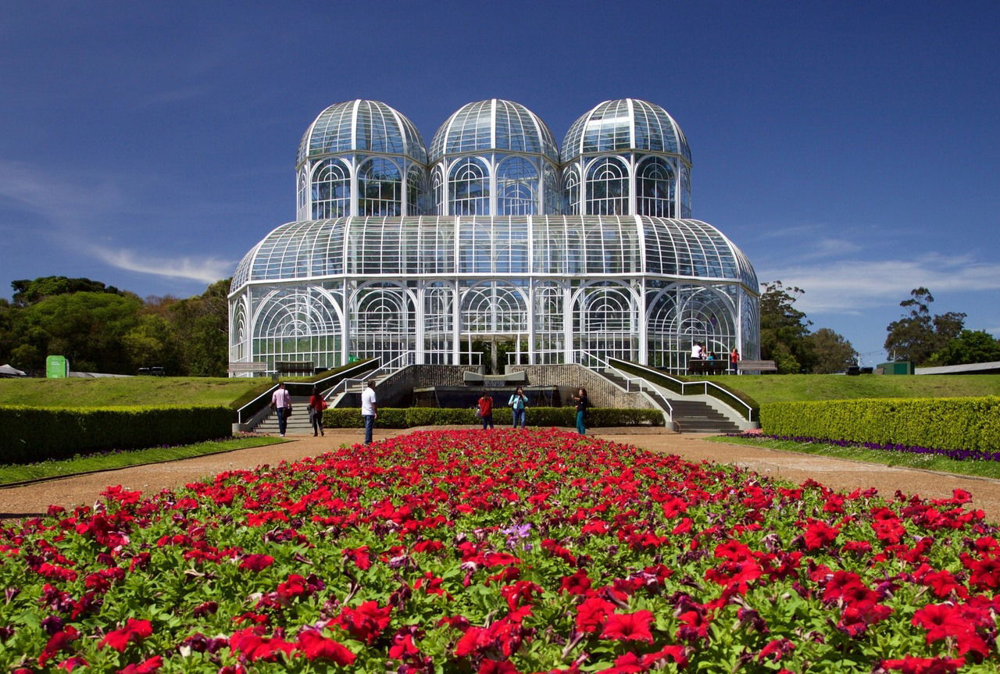

Curitiba é uma cidade rica em cultura e história, com vários pontos turísticos interessantes para visitar. A seguir são apresentados dois desses pontos:

Inaugurado em 1991, o Jardim Botânico de Curitiba é considerado um dos principais cartões postais da cidade e um
dos jardins botânicos mais visitados do Brasil.
O jardim é conhecido por seu design inovador, que apresenta uma estufa em estilo art nouveau com três abóbadas de vidro e ferro inspiradas no Palácio de Cristal de Londres. A estufa abriga uma variedade de espécies vegetais nativas do Brasil, bem como de outros países.
O jardim também conta com diversas trilhas e caminhos para caminhadas, além de uma grande área verde com gramados, flores e jardins temáticos. Há também um espaço para exposições, um museu botânico e um teatro ao ar livre, onde são realizados eventos culturais e apresentações artísticas.
Uma das atrações mais populares do jardim é a "Fonte das Cerejeiras", um conjunto de 30 cerejeiras doadas pelo governo japonês que florescem no início da primavera, criando um espetáculo de cores e aromas.
Para mais informações, visite o site oficial do
Jardim Botânico Municipal de Curitiba.
O Museu Oscar Niemeyer (MON), também conhecido como Museu do Olho, é um dos principais pontos turísticos da cidade de Curitiba, no estado do Paraná, Brasil. Inaugurado em 2002, o museu é dedicado à arte, arquitetura e design.
O museu é conhecido por sua arquitetura moderna e arrojada, projetada pelo renomado arquiteto brasileiro Oscar Niemeyer. O edifício é composto por duas estruturas principais: uma esfera e um prédio anexo em forma de olho, que deu origem ao apelido do museu. As duas estruturas são conectadas por um túnel subterrâneo e apresentam exposições permanentes e temporárias, além de uma loja de presentes, cafeteria e auditório.
O MON abriga uma coleção permanente de arte contemporânea brasileira, com cerca de 7 mil obras de artistas renomados, incluindo Tarsila do Amaral, Candido Portinari, Alfredo Andersen e outros. O museu também recebe exposições temporárias de artistas nacionais e internacionais, abrangendo uma ampla gama de estilos e mídias, como pintura, escultura, fotografia e vídeo.
Além das exposições, o MON oferece uma variedade de atividades educativas e culturais para todas as idades, como oficinas, palestras, seminários e apresentações musicais. O museu também possui um parque externo com um mirante com vista para a cidade de Curitiba, o que faz dele um destino turístico popular para visitantes de todas as partes do mundo.
O Museu Oscar Niemeyer é um ponto turístico obrigatório para quem visita a cidade de Curitiba, e é considerado uma referência na arte e cultura brasileira.
Para mais informações, visite o site oficial do
Museu Oscar Niemeyer Clique para voltar